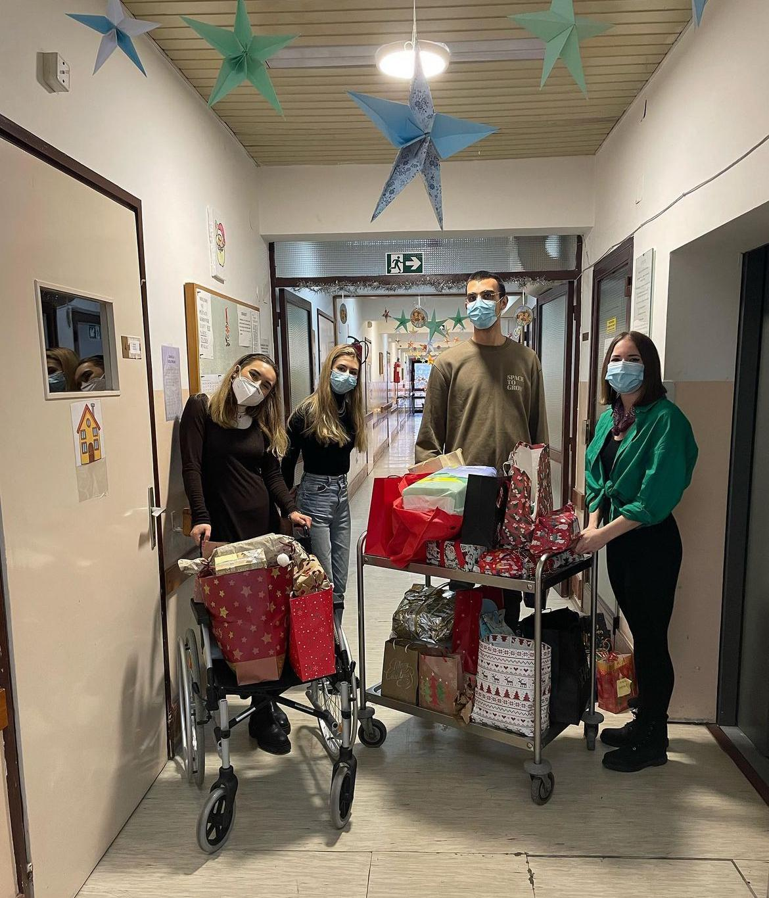

O NAMA
Studentska sekcija za psihijatriju djeluje u sklopu Medicinskog fakulteta Sveučilišta u Zagrebu. Osnovana je 2022. godine na inicijativu 3 studentice te uz mentorstvo prof. Alme Mihaljević-Peleš, prof. Ninoslava Mimice i prof. Dražena Begića. Vodstvo sekcije čini sedmero studenata medicine od 3. do 6. godine studija: Jana Majdak, Toma Perko, Ana Maria Antić, Veronika Lendvaj, Laura Lukačić, Luka Linarić i Frane Franić. Uz vodstvo, sekcija sadrži i grupu aktivnih članova koja broji 26 studenata od 1. pa sve do 6.godine.
OBAVIJESTI
Dragi naši,
S danom sekcija iza nas i pripremama za buduća događanja u punom jeku došlo je vrijeme da se službeno nađemo po prvi puta ove godine. Prvi sastanak bi trebao obuhvaćati
naše pretstavljanje s okvirnim planovima i željama za ovu akademsku godinu. Nakon toga, planirano je gledanje filma "It's kind of a funny story" u četvrtak u 18:00 na HIIM-u.
Svi ste dobrodošli!
PROJEKTI I POSTIGNUĆA
Projekt “U vaše živote kap naše dobrote“ je inicijativa vodstva Studentske sekcije za psihijatriju Medicinskog fakulteta Sveučilišta u Zagrebu.
Nakon prošlogodišnje izuzetno uspješno odrađene humanitarne akcije u kojoj smo uspjeli opskrbiti 508 štićenika sa željenim darovima i potrepštinama na području Banovine i Slavonije, ove nam je godine želja učiniti isto. Uvidjevši da je situacija u domovima u Slavoniji znatno teža i ozbiljnija, ove smo godine odlučili primarni fokus usmjeriti prema opskrbljivanju štićenika u domovima u Slavoniji, ali i socijalno ugroženih starijih osoba na terenima u blizini domova s osnovnim i svakodnevnim, a njima prijeko potrebnim potrepštinama. Planirano je da akcija ove godine obuhvati pet domova za starije i nemoćne na području Slavonije.